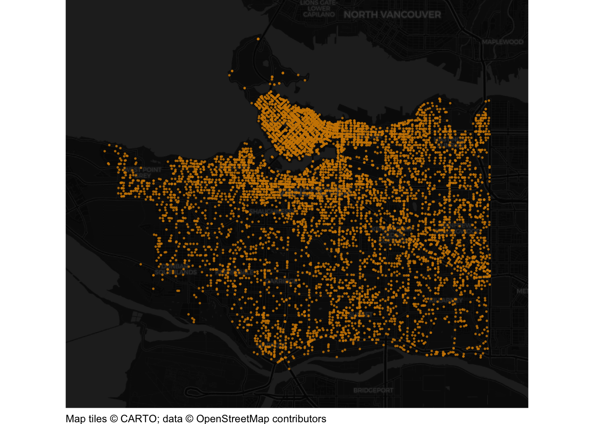

This document walks through a specimen answer to this exercise. Read each code section and its numbered explanations below. Select the number at the start of each explanation to highlight the line of code that explanation relates to.
In R, like in many programming languages, there is usually more than one way to complete a task. This code shows one way to complete this exercise. There are other ways to organise this code that are equally good and achieve the same result, but the code below tries to balance making the code efficient with making it easy to read. If your code is different from the code here, read through the notes below the answer and use those to decide whether you prefer your own approach or the specimen answer below. You can also use the notes to improve your own code.
WarningThe specimen answer expects your computer to be set up as outlined in the book.
<httr2_response>
GET https://mpjashby.github.io/crimemappingdata/vancouver_thefts.csv.gz
Status: 200 OK
Content-Type: application/gzip
Body: On disk '/Users/mattashby/Documents/Crime Mapping Book/exercises/data/raw/vancouver_thefts.csv.gz' (422683 bytes)
Rows: 21918 Columns: 10
── Column specification ────────────────────────────────────────────────────────
Delimiter: ","
chr (3): TYPE, HUNDRED_BLOCK, NEIGHBOURHOOD
dbl (7): YEAR, MONTH, DAY, HOUR, MINUTE, X, Y
ℹ Use `spec()` to retrieve the full column specification for this data.
ℹ Specify the column types or set `show_col_types = FALSE` to quiet this message.

NoteView the complete R script
# This script produces a dot map of thefts from vehicles in Vancouver in 2020# Load packagespacman::p_load(here, httr2, sf, sfhotspot, tidyverse)# Download the original data and keep a local copyrequest("https://mpjashby.github.io/crimemappingdata/vancouver_thefts.csv.gz") |>req_perform(path =here("data", "raw", "vancouver_thefts.csv.gz"))# Read and wrangle datathefts_from_vehicles <-here("data", "raw", "vancouver_thefts.csv.gz") |>read_csv() |># Convert column names to snake-case janitor::clean_names() |># Convert object to an object that understands each row represents a location# on the Earth's surfacest_as_sf(coords =c("x", "y"), crs ="EPSG:32610") |># Keep only the rows in the dataset relating to thefts from vehiclesfilter(type =="Theft from Vehicle")# Create a dot map of thefts from vehicleshotspot_map( thefts_from_vehicles,basemap_type ="cartodark",alpha =0.25,colour ="orange3",size =0.33)
1# This script produces a dot map of thefts from vehicles in Vancouver in 2020
1
Start with a short comment explaining what the script does. Including the crime type, place and year helps us recognise the script when we return to it later. See Organising code with comments.
pacman::p_load() loads the packages needed for this analysis, listed in alphabetical order with the tidyverse package last. here allows us to specify where to find files in the workspace; httr2 downloads data from the internet; sf handles spatial objects; sfhotspot make it easy to make crime maps; tidyverse provides tools for reading, wrangling and plotting data. Loading packages at the start makes it easy to check which tools the script needs. See Loading packages.
Step 3: Download the original data
# Download the original data and keep a local copy3request("https://mpjashby.github.io/crimemappingdata/vancouver_thefts.csv.gz") |>4req_perform(path =here("data", "raw", "vancouver_thefts.csv.gz"))
3
request() specifies the URL of the file to download. The pipe operator (|>) passes that request to the next function. The .csv.gz extension means this is a compressed CSV file. We keep the downloaded file in its original form; read_csv() can read it without a separate decompression step. See Downloading and loading data; Stringing functions together.
4
req_perform() performs the download that was set up by request(). here() specifies where the original file should be saved, relative to the crime_mapping workspace. Keeping the original data in data/raw means we can return to it if we make a mistake while wrangling the data. See Keeping your files organised.
Step 4: Load and prepare the theft data
# Read and wrangle data5thefts_from_vehicles <-here("data", "raw", "vancouver_thefts.csv.gz") |>6read_csv() |># Convert column names to snake-case7 janitor::clean_names() |># Convert object to an object that understands each row represents a location# on the Earth's surface8st_as_sf(coords =c("x", "y"), crs ="EPSG:32610") |># Keep only the rows in the dataset relating to thefts from vehicles9filter(type =="Theft from Vehicle")
5
here() specifies which file we are going to read. The pipe operator (|>) passes the result to the function on the next line. <- stores the result of the whole pipeline in the object thefts_from_vehicles. See Keeping your files organised; Stringing functions together; Naming objects.
janitor::clean_names() from janitor gives the columns consistent names in snake_case. This makes it easier to write the rest of the code without worrying about capital letters or spaces in column names. See Cleaning column names.
8
st_as_sf() converts an ordinary object into a spatial object which specifies how the coordinates in the data correspond to locations of the earth. The argument coords = c("x", "y") specifies that the numeric coordinates describing each location are stored in the columns x and y. The argument crs = "EPSG:32610" describes how those coordaintes relate to places on the Earth’s surface. Note that we know which code to use for the crs argument because that was specified in the exercise instructions. See Converting data to an SF object.
9
filter() from dplyr keeps only records whose type is exactly "Theft from Vehicle". Matching is case-sensitive, so the spelling, spacing and capital letters must match the data. This line does not end in |> because it finishes the pipeline. R stores the finished result in the thefts_from_vehicles object named at the start of the pipeline. See Filtering rows.
Step 5: Draw the map
# Create a dot map of thefts from vehicles10hotspot_map(11 thefts_from_vehicles,12basemap_type ="cartodark",13alpha =0.25,14colour ="orange3",15size =0.33)
10
hotspot_map() draws the theft locations over a base map. The arguments below then control how the points appear. Note that the result of this function is not stored in an object using <-, so running it causes the result (in this case, the map) to be displayed directly on the screen. See Drawing the map.
11
Use the prepared theft records as the basis for the map.
12
Choose a dark cartodark base map. This is a design choice to show you the range of base maps available – using an alternative such as cartolight would have been acceptable, too. The street pattern provides geographic context, while the bright points will stand out against it. See Base maps.
13
There are many thefts to show, so points may overlap. alpha = 0.25 makes them partly transparent so that areas containing more overlapping points appear more prominent (although we will several better ways to solve this problem). See Controlling aesthetics.
14
Use orange points to contrast with the dark base map. The crime data should be the most visually prominent layer. See Visual hierarchy.
15
Make the points small with size = 0.33, so that they do not merge into a single solid area. We could experiment with both size and transparency to find a combination that shows the concentrations clearly.